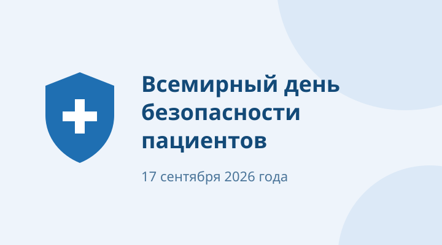

Всемирный день безопасности пациентов — 2026
Тема года — «Безопасная медицинская помощь при неинфекционных заболеваниях». Такие заболевания требуют долгосрочного ведения, поэтому безопасность важна на всех этапах: от профилактики и скрининга до лечения, реабилитации и паллиативной помощи. Подробнее
17.09.2026